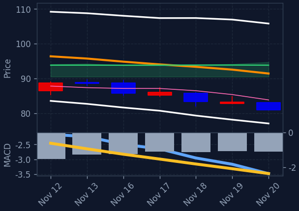
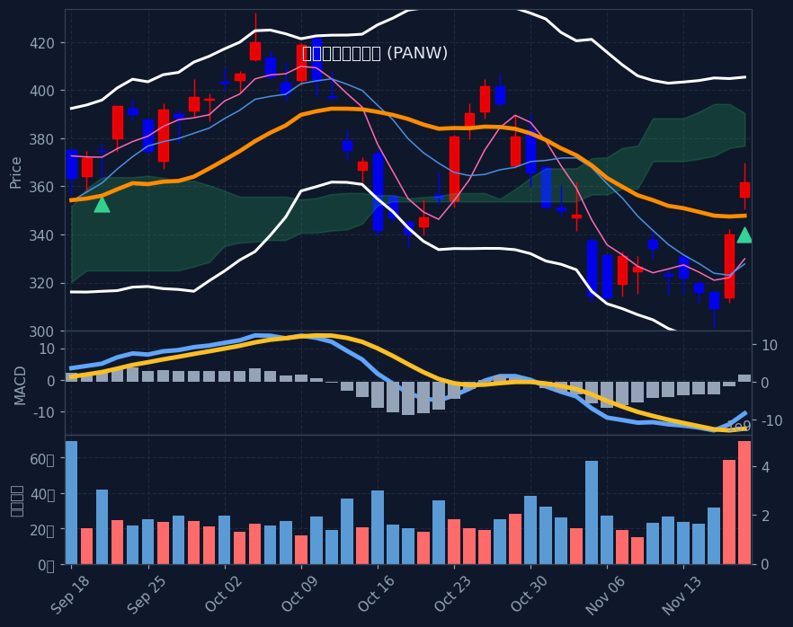
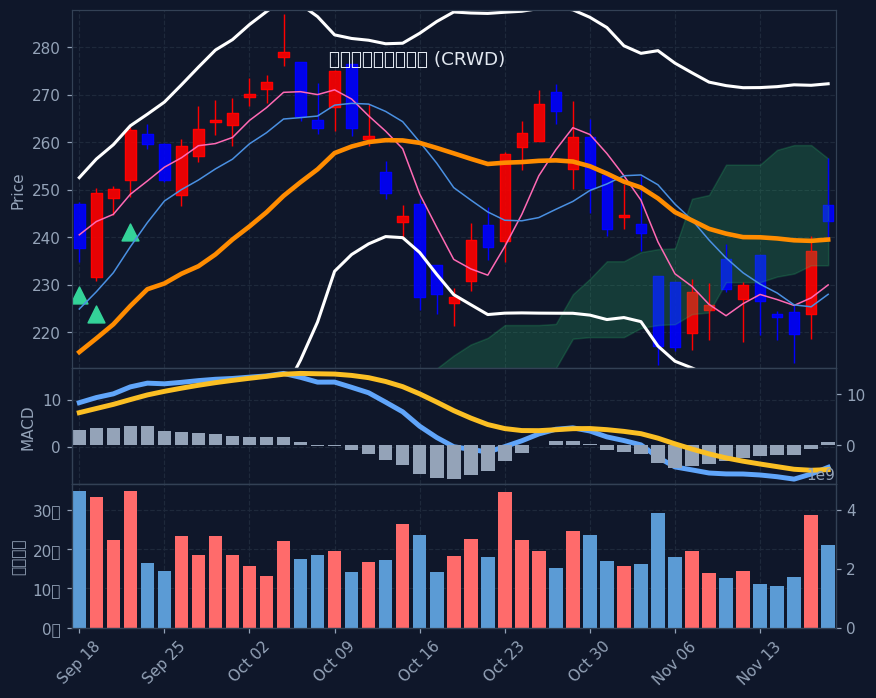
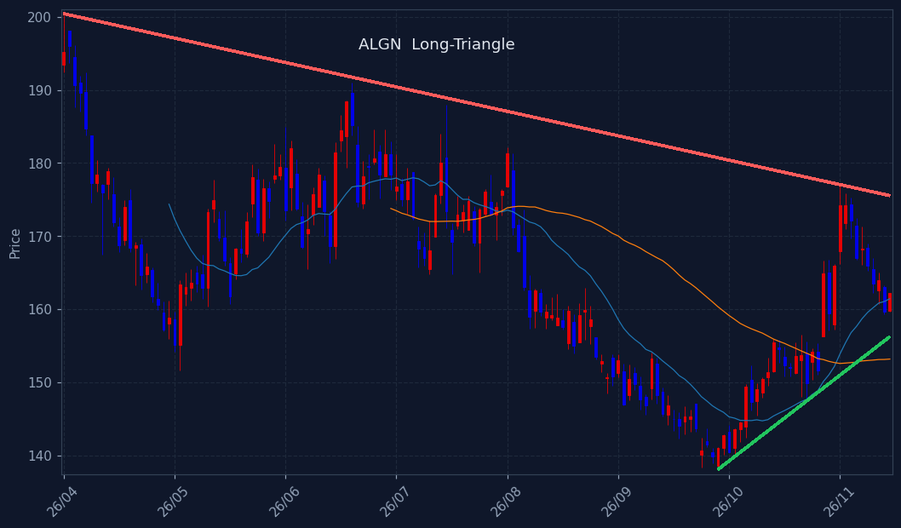
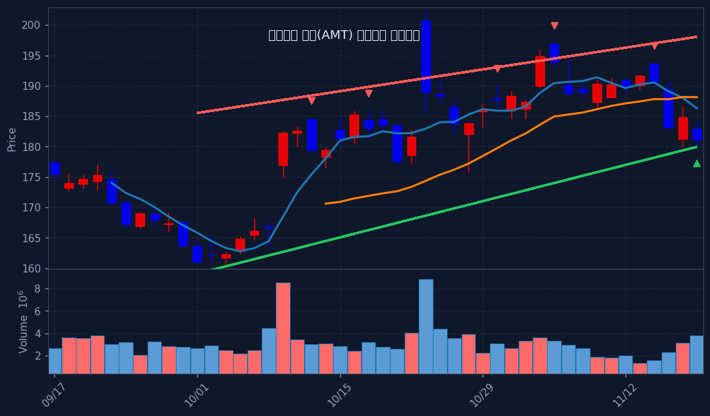
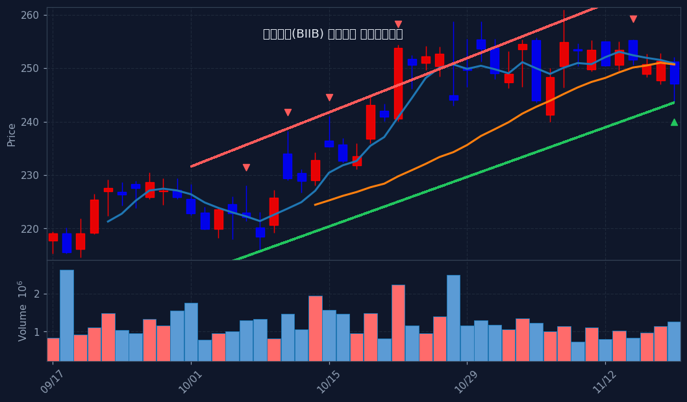
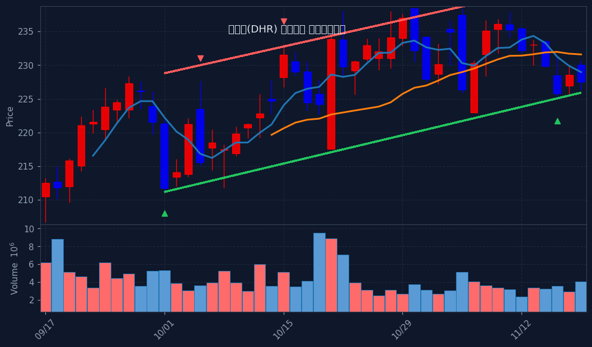
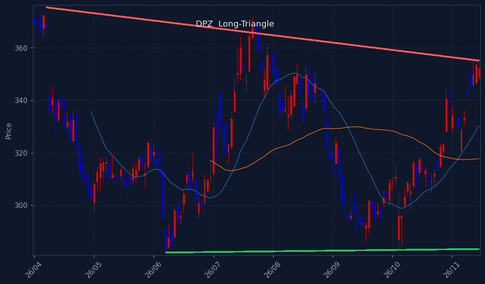

📊 미국장 장전(프리장) 리포트
19 / 100 — 극단적 공포 · 🔥 극단 공포 = 바닥 매수권(백테스트 F&G≤25 매수 20일 +4~9%)
🌎미국 증시 마감



현재 미국 프리장 시장은 Anthropic의 데뷔 이후에도 AI 불안감이 해소되지 않으면서 나스닥 선물이 -0.67% 하락하는 등 기술주 중심의 약세가 지속되고 있습니다. 반도체(-3.14%)와 기술/IT(-2.28%) 섹터가 약세를 주도하고 있으며, 메타(-2.05%), 엔비디아(-2.64%), AMD(-5.16%) 등의 빅테크 하락폭이 큽니다. 반면 금융(+0.58%)과 헬스케어(+0.32%) 등 일부 방어적 섹터만 소폭 오름세를 보이며 시장 전반의 투심이 크게 위축된 모습입니다.
직전 정규장 마감 후 기대받던 Anthropic의 상장/데뷔가 기술주 투매를 멈추지 못하면서 AI 수익성에 대한 의구심이 글로벌 증시 전반으로 확산되었습니다. 이에 따라 아시아 증시가 일제히 급락한 여파가 미국 프리장으로 이어져 반도체 3배 레버리지 ETF(SOXL)가 -9.89% 급락하고 엔비디아, 브로드컴(-2.92%), AMD 등 주요 반도체주가 큰 폭의 하락세를 기록 중입니다. 한편 달러 강세와 위험자산 회피 심리 속에서 WTI 유가(-2.82%)와 금(-3.04%) 등 원자재 가격도 동반 하락하고 있습니다.
프리장에서는 반도체(-3.14%), 태양광/신재생(-2.70%), 기술/IT(-2.28%) 섹터가 AI 거품론 및 실적 우려 뉴스와 맞물려 가장 큰 타격을 받고 있습니다. 아시아 반도체 벨트(대만, 한국, 일본)의 주가 폭락 소식이 전해지면서 미국 반도체 섹터 전반에 매도세를 가중시키는 악순환이 이어지고 있습니다. 상대적으로 금융(+0.58%) 및 헬스케어(+0.32%) 섹터가 선전하고 있으나 시장의 기술주 비중이 커 전체 지수 방어에는 한계가 있습니다. 미 증시 내 AI 및 반도체 섹터의 조정이 깊어짐에 따라 한국 시장의 반도체 및 관련 공급망 종목들 역시 당분간 변동성 확대에 대비할 필요가 있습니다.
🇺🇸미국 야간 (선물·M7·SOXL · 마감 등락 + 프리장/애프터 등락)
📊 나스닥 선물 -0.67%
📊 S&P500 선물 -0.24%
- 애플 AAPL·나스닥 마감 -0.9% · 프리장 +0.4%
- 마이크로소프트 MSFT·나스닥 마감 -1.8% · 프리장 -1.6%
- 테슬라 TSLA·나스닥 마감 -2.4% · 프리장 -1.9%
- 메타 META·나스닥 마감 -3.3% · 프리장 -2.5%
- 엔비디아 NVDA·나스닥 마감 -3.3% · 프리장 -2.8%
- 알파벳 GOOGL·나스닥 마감 -3.5% · 프리장 -0.5%
- 아마존 AMZN·나스닥 마감 -3.9% · 프리장 -1.8%
- 한국 ETF(EWY) EWY 마감 -1.6% · 프리장 -2.4%
- SOXL(반도체 3X) SOXL 마감 -8.0% · 프리장 -10.6%
🚀프리장 급등 TOP5 (ABCD 필터 통과 종목 중)
-
코스트코
COST·나스닥 · 종가 $1,093.83 (전일 -0.25%) (프리장 +1.10%)
· 필수소비재유통C 시그널 ⓘ대세 정배열 + 신고가 (-2.7%, 60선+12%) · ⚠️끝물주의(RSI다이버전스(74→68))
-
타겟
TGT·NYSE · 종가 $167.46 (전일 +0.92%) (프리장 +0.27%)
· 필수소비재유통A/C/D 시그널 ⓘ대세 정배열 + 신고가 (-2.6%, 60선+6%)
-
디즈니
DIS·NYSE · 종가 $120.25 (전일 -1.72%) (프리장 -0.02%)
· 미디어/엔터C 시그널 ⓘ대세 정배열 + 신고가 (-2.5%, 60선+10%) · ⚠️끝물주의(RSI다이버전스(71→63))
-
인스메드
INSM·나스닥 · 종가 $144.46 (전일 +20.58%) (프리장 -0.39%)
· 생명 공학 및 의학 연구D 시그널 ⓘ추세 반전 (일목구름 위, 5>20, MACD+, 20<60(초입))
-
핀둬둬 ADR
PDD·나스닥 · 종가 $86.00 (전일 +11.04%) (프리장 -1.45%)
· 온라인 서비스A 시그널 ⓘ수렴대 위로 상승전환 (수렴 0.3%) / 120선 위 (+4.6%) · MACD[0선돌파,GC,0선위,상승]
🔥강세 섹터 (상승률 상위)
- 금융 +0.58%
- 헬스케어/바이오 +0.32%
- 방산/우주항공 -0.15%
- 에너지 -0.59%
🔻약세 섹터 (하락률 상위)
- 반도체 -3.14%
- 태양광/신재생 -2.70%
- 기술/IT -2.28%
- 경기소비재 -0.65%
🧬관심 테마 대장 (양자·우주·AI 등)
-
차임 파이낸셜
CHYM·나스닥
D ⓘ · 종가 $30.85 (전일 -4.25%) 1주일 -6.6%테마: 핀테크 · 시총 15조 8,392억 · 거래대금 2,119억
💰미국장 거래대금 순위 TOP10 (S&P500)
-
1.
팔로알토네트웍스
PANW·나스닥 · 종가 $361.73 (전일 +6.42%)
거래대금 9조 2,692억시총 396조 2,249억
-
2.
크라우드스트라이크
CRWD·나스닥 · 종가 $243.46 (전일 +2.71%)
거래대금 3조 7,680억시총 333조 4,989억
-
3.
코스트코
COST·나스닥 · 종가 $1,093.83 (전일 -0.25%)
거래대금 3조 1,171억시총 648조 4,474억
-
4.
인스메드
INSM·나스닥 · 종가 $144.46 (전일 +20.58%)
거래대금 2조 7,838억시총 42조 3,974억
-
5.
핀둬둬 ADR
PDD·나스닥 · 종가 $86.00 (전일 +11.04%)
거래대금 2조 6,864억시총 163조 7,641억
-
6.
디즈니
DIS·NYSE · 종가 $120.25 (전일 -1.72%)
거래대금 2조 4,150억시총 274조 7,736억
-
7.
애플로빈
APP·나스닥 · 종가 $379.02 (전일 -3.04%)
거래대금 1조 7,151억시총 167조 9,991억
-
8.
모놀리식파워
MPWR·나스닥 · 종가 $1,295.86 (전일 -1.15%)
거래대금 1조 3,151억시총 84조 5,449억
-
9.
타겟
TGT·NYSE · 종가 $167.46 (전일 +0.92%)
거래대금 1조 3,011억시총 101조 7,748억
-
10.
컴캐스트
CMCSA·나스닥 · 종가 $24.86 (전일 -1.51%)
거래대금 9,207억시총 118조 992억
🏆미국 추천 Top 3



🇺🇸미국 종목 스크리닝 (전략별 칸 · A/B/C/D)
📊 A 수렴 후 상승 (3)
-
팔로알토네트웍스
PANW·나스닥 · 종가 $361.73 (전일 +6.42%) (프리장 -2.07%)
A 시그널 ⓘ 20일선 +4.0%시총 396조 2,249억 · 거래대금 9조 2,692억테마: 시스템소프트웨어수렴대 위로 상승전환 (수렴 5.8%) / 120선 위 (+4.3%) · MACD[GC,상승]
-
크라우드스트라이크
CRWD·나스닥 · 종가 $243.46 (전일 +2.71%) (프리장 -3.27%)
A 시그널 ⓘ 20일선 +1.6%시총 333조 4,989억 · 거래대금 3조 7,680억테마: 시스템소프트웨어수렴대 위로 상승전환 (수렴 4.8%) / 120선 위 (+12.7%) · MACD[GC,상승]
-
핀둬둬 ADR
PDD·나스닥 · 종가 $86.00 (전일 +11.04%) (프리장 -1.45%)
A 시그널 ⓘ 20일선 +7.8%시총 163조 7,641억 · 거래대금 2조 6,864억테마: 온라인 서비스수렴대 위로 상승전환 (수렴 0.3%) / 120선 위 (+4.6%) · MACD[0선돌파,GC,0선위,상승]
🔄 B 20일선 눌림목 (3)
-
애플로빈
APP·나스닥 · 종가 $379.02 (전일 -3.04%) (프리장 -3.12%)
B/D 시그널 ⓘ 20일선 +14.5%시총 167조 9,991억 · 거래대금 1조 7,151억테마: 광고급등 (10일 +20%) / 20일선 위 (+14.5%, 60선기울기 +5.1%) / 단기눌림 (5일선 -4.9%, 5일고점 -9.5%) · 고점대비 -9.5%
-
모놀리식파워
MPWR·나스닥 · 종가 $1,295.86 (전일 -1.15%) (프리장 -3.34%)
B 시그널 ⓘ 20일선 +1.3%시총 84조 5,449억 · 거래대금 1조 3,151억테마: 반도체급등 (10일 +31%) / 20일선 위 (+1.3%, 60선기울기 +0.2%) / 단기눌림 (5일선 -2.3%, 5일고점 -10.6%) · 고점대비 -14.4%
-
퍼거슨 엔터프라이즈
FERG·NYSE · 종가 $247.39 (전일 -1.53%)
B 시그널 ⓘ 20일선 +1.1%시총 64조 901억 · 거래대금 4,666억테마: 상사/유통급등 (10일 +15%) / 20일선 위 (+1.1%, 60선기울기 +0.9%) / 단기눌림 (5일선 -1.6%, 5일고점 -4.6%) · 고점대비 -7.4%
📈 C 추세추종 (3)
-
코스트코
COST·나스닥 · 종가 $1,093.83 (전일 -0.25%) (프리장 +1.10%)
C 시그널 ⓘ 20일선 +3.9% ⚠️끝물ⓘ시총 648조 4,474억 · 거래대금 3조 1,171억테마: 필수소비재유통대세 정배열 + 신고가 (-2.7%, 60선+12%) · ⚠️끝물주의(RSI다이버전스(74→68))
-
디즈니
DIS·NYSE · 종가 $120.25 (전일 -1.72%) (프리장 -0.02%)
C 시그널 ⓘ 20일선 +3.8% ⚠️끝물ⓘ시총 274조 7,736억 · 거래대금 2조 4,150억테마: 미디어/엔터대세 정배열 + 신고가 (-2.5%, 60선+10%) · ⚠️끝물주의(RSI다이버전스(71→63))
-
타겟
TGT·NYSE · 종가 $167.46 (전일 +0.92%) (프리장 +0.27%)
A/C/D 시그널 ⓘ 20일선 +5.9%시총 101조 7,748억 · 거래대금 1조 3,011억테마: 필수소비재유통대세 정배열 + 신고가 (-2.6%, 60선+6%)
🔃 D 추세 반전 (3)
-
인스메드
INSM·나스닥 · 종가 $144.46 (전일 +20.58%) (프리장 -0.39%)
D 시그널 ⓘ 20일선 +28.2%시총 42조 3,974억 · 거래대금 2조 7,838억테마: 생명 공학 및 의학 연구추세 반전 (일목구름 위, 5>20, MACD+, 20<60(초입))
-
애플로빈
APP·나스닥 · 종가 $379.02 (전일 -3.04%) (프리장 -3.12%)
B/D 시그널 ⓘ 20일선 +14.5%시총 167조 9,991억 · 거래대금 1조 7,151억테마: 광고추세 반전 (일목구름 위, 5>20, MACD+, 20>60)
-
타겟
TGT·NYSE · 종가 $167.46 (전일 +0.92%) (프리장 +0.27%)
A/C/D 시그널 ⓘ 20일선 +5.9%시총 101조 7,748억 · 거래대금 1조 3,011억테마: 필수소비재유통추세 반전 (일목구름 위, 5>20, MACD+, 20>60)
※ S&P500 대상 A/B/C/D 전략별 분류(각 칸 거래대금순). 한 종목이 여러 전략에 잡히면 각 칸에 중복 표기. 백테스트상 기계적 엣지는 약하며 매수 추천이 아닙니다. 판단·책임은 본인.
🇰🇷한국인 자금흐름 (서학개미 · 최근 5거래일 순매수/순매도, 억원)
📅 결제일 11/13~11/19(5거래일) 기준 · 오늘 11/20 기준 약 1일 전 데이터 · T+2 결제 기준(실제 매매는 약 2거래일 전)
💸 한국인 순매수 일평균: +5,650억 (전주 +5,062억 대비 +11.6%) · 5일 총액 +28,250억
💰 순매수 TOP5 — 개별종목 (11/13~11/19 결제 기준)
- 엔비디아 NVDA·나스닥 +6,704억시총 4,716조 1,753억 · 거래대금 62조 6,144억
- 특정 티커 불명 X +2,293억
- 메타 META·나스닥 +812억시총 2,039조 1,152억 · 거래대금 12조 1,929억
- 아이온큐 IONQ·NYSE +611억시총 14조 644억 · 거래대금 8,210억
- 알파벳(구글) GOOGL·나스닥 +585억시총 4,484조 8,514억 · 거래대금 17조 9,301억
📦 순매수 TOP5 — ETF (11/13~11/19 결제 기준)
- 디렉션 데일리 세미컨덕터 불 3X ETF SOXL +4,730억거래대금 19조 5,141억
- 프로셰어즈 울트라프로 QQQ ETF TQQQ +1,538억거래대금 11조 3,557억
- 나스닥100 2X(QLD) QLD +1,030억거래대금 1조 1,497억
- 나스닥100 ETF(QQQM) QQQM +607억거래대금 2조 6,162억
- S&P500 ETF(VOO) VOO +472억거래대금 11조 2,154억
🔻 순매도 TOP3 — 자금 유출 (11/13~11/19 결제 기준)
- 테슬라 TSLA·나스닥 −1,360억시총 1,980조 724억 · 거래대금 13조 2,125억
- 마이크론 MU·나스닥 −523억시총 1,045조 1,640억 · 거래대금 32조 3,345억
- 모더나 MRNA·나스닥 −394억시총 107조 9,082억 · 거래대금 2조 1,837억
※ 예탁결제원(SEIBro) 최근 5거래일 한국인 순매수/순매도 결제금액(T+2) · 11/13~11/19 결제 기준(실제 매매는 약 2거래일 전). 자금이 어디로 유입·유출되는지 참고용.
🩹E 투매 바닥 반등 (투매 capitulation + 반등 · 🔥=지수 동반 바닥)
현재 E(투매 바닥) 신호 없음 — 시장이 바닥권(지수 RSI·공포탐욕 극단)이 아닐 땐 비어있는 게 정상입니다.
※ 투매 바닥(RSI≤30+50선이격+거래량폭증)에서 반등 시작 포착, 4시간봉 RSI도 과매도. 🔥는 지수(나스닥/S&P·코스피)도 RSI<35 동반 바닥(강신호). 떨어지는 칼날 위험 — 매수 추천 아님, 판단·책임 본인.
🚀급등 초입 (20일 신고가 돌파·거래량 급증)
-
핀둬둬 ADR
PDD·나스닥 · $86.00
+11.04%
급등초입 (20일돌파·거래량4.1배·당일+11.0%·20선+8%)
※ 급등 초입(추세확인보다 빠른 돌파 진입) 참고용. 백테스트 표본 적고 상승장 기준 — 가짜 신호·되돌림 위험, 매수 추천 아님.
📐F. 60일선 지지 (60일선까지 눌렸다 지지 마감 · 참고용)
-
익스페디터스 인터내셔널 오브 워싱턴
EXPD·NYSE · $193.14
+2.26%
60일선 지지 (저가 -0.9%·종가 +0.4%·꼬리지지 54%)
-
모더나
MRNA·나스닥 · $199.33
+1.29%
60일선 지지 (저가 -3.2%·종가 +1.6%·꼬리지지 61%)
-
실리콘 래보라토리스
SLAB·나스닥 · $221.55
+0.10%
60일선 지지 (저가 -0.1%·종가 +0.2%·꼬리지지 75%)
※ 60일선까지 눌렸다 지지받고 마감한 종목(참고 태그). 백테스트상 다음날 반등 엣지 없음(승률 48~49%·생존편향 포함) 확인됨 — 매수 추천·시그널 아님, 종합점수/Top3에도 미반영. 단순 참고용.
🧬삼각수렴 임박 (변동성 수축·돌파 직전 코일 · 참고용)






※ 삼각수렴 돌파 임박 종목. 📐장기 삼각수렴(수개월 대형 삼각형, 볼록껍질 추세선+실수축) = 백테스트 491건 승률 66%·평균 +8.7%/20일로 엣지 확인(HOOD·TSLA류 대박 초입). 단기 코일 = 엣지 약함(승률 ~60% 베타 수준). 🔻대칭=고점↓·저점↑ / 🟰바닥지지=저점 평평. 매수추천 아님·종합점수/Top3 미반영(관찰용).